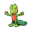
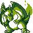
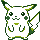

THE POKéDEX PROJECT
A growing collection of offline, in-game-style Pokédexes — one for each Pokémon game, with the look, data and sprites of its own era. Pick a game and start exploring.
386 Pokémon available
2 languages · EN / FA
100% offline · static site
35 games planned

● AVAILABLE NOW
▶ OPEN DEX
POKéMON EMERALD — GEN 3 DEX
The full in-game Pokédex experience of Pokémon Emerald: all 386 Pokémon of Generations I-III with Emerald-style sprites, dex entries, stats, type matchups and evolutions — styled after the dex inside the game itself.

● AVAILABLE NOW
▶ OPEN DEX
POKéMON RED/BLUE — GEN 1 DEX
The in-game Pokédex of Pokémon Red and Blue: all 151 Kanto Pokémon with two sprite sets — Game Boy mono (DMG/Pocket) and colorized Red/Blue — plus page-flipping entries, authentic cries and the same structure as the Emerald dex.

● AVAILABLE NOW
▶ OPEN DEX
POKÉMON YELLOW — GEN 1 DEX
The in-game Pokédex of Pokémon Yellow: all 151 Kanto Pokémon with Yellow's own redrawn sprites — Game Boy mono (DMG/Pocket) plus a colorized set — and the Yellow version's own dex entry texts, with page-flipping, authentic cries and the same structure as the Emerald dex.
● AVAILABLE NOW
▶ OPEN DEX
POKÉMON GOLD & SILVER — GEN 2 DEX
The in-game Pokédex of Pokémon Gold and Silver: all 251 Johto + Kanto Pokémon with each version's own sprites — plus their shiny variants, introduced in this very generation — both versions' dex texts side by side, the GOLD/SILVER theme toggle, authentic cries and the same structure as the Emerald dex.
GAME CATALOG
Every Pokémon game gets its own dex — its own style, data and sprites.
4 / 20 RELEASED
ROADMAP
This project grows game by game. Each new Pokédex is rebuilt to match its own game — the UI style of that era, the regional dex of that version, the sprites and entry texts of that release. Emerald is the first one; more will follow.
STEP 1 ✓
Emerald (Gen 3)
The in-game Emerald dex for all 386 Pokémon of Gens I-III — live now.
STEP 2 ✓
Red & Blue (Gen 1)
The in-game Red/Blue Pokédex for all 151 Kanto Pokémon — live now.
STEP 3 ✓
Yellow & Gold/Silver (Gen 1–2)
Yellow with its own entries; Gold/Silver with both versions' sprites, texts and shiny variants — live now.
STEP 4
Next games
Crystal, Ruby/Sapphire and more — one dex per game, each faithful to its original look.